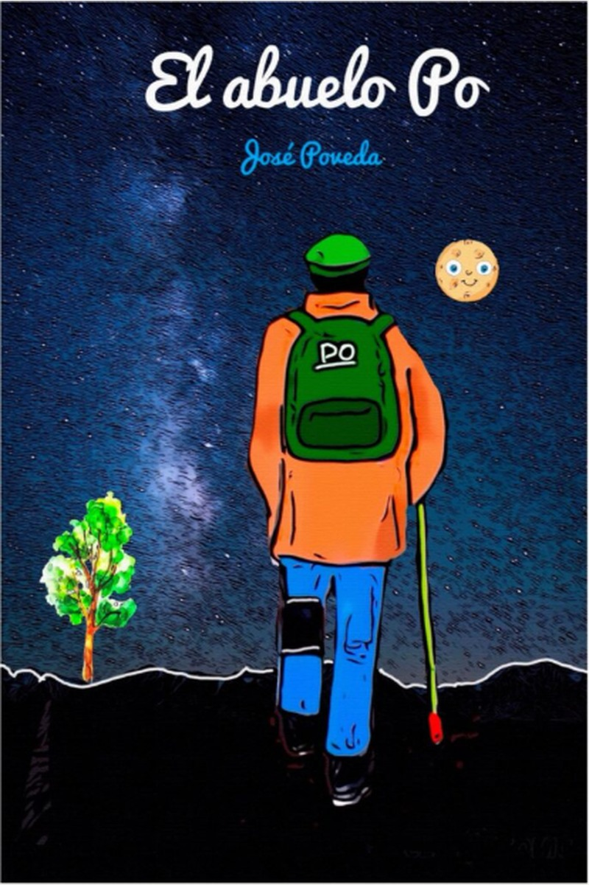
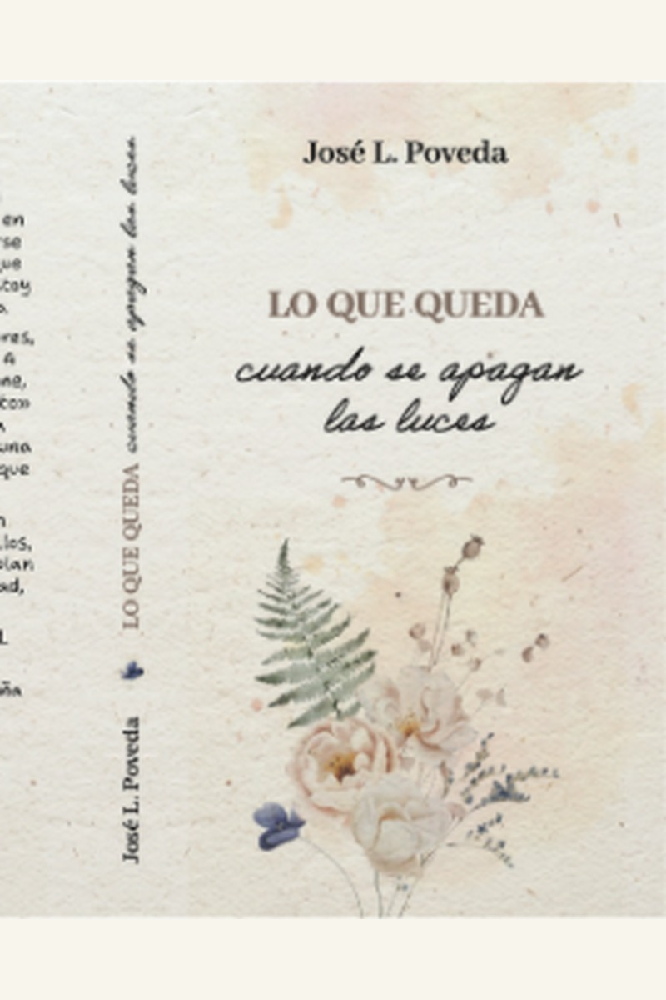
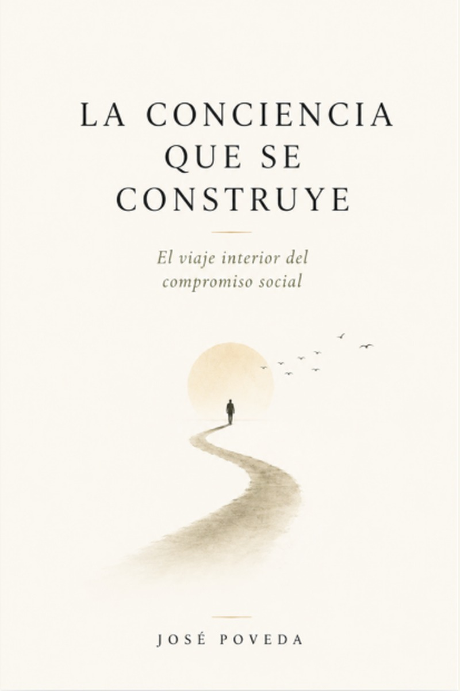

Libros
Mis libros
No llegué a la escritura pensando en convertirme en escritor. Llegué a ella porque hubo experiencias, personas y preguntas que no quería dejar atrás. Algunas proceden de mi propia vida; otras, de muchos años dedicados a acompañar a personas que atravesaban momentos difíciles. Con el tiempo comprendí que escribir era también una manera de ordenar todo aquello, de interrogarme y, quizá, de dejar algo que pudiera servir a otros.

El diario del Abuelo Po
Relato autobiográfico · Próxima publicación
No es únicamente el relato de una vida. La memoria personal y familiar sirve aquí para volver sobre la infancia, las dificultades, los aprendizajes y las experiencias que han ido dejando huella.
Existe además una voluntad explícita de legado: dejar a quienes vienen detrás algo más que una sucesión de recuerdos, compartiendo también las preguntas y los aprendizajes que permanecen después de lo vivido.

Lo que queda cuando se apagan las luces
Ensayo sobre Educación Social y protección de menores · Próxima publicación
El libro nace de la experiencia profesional en un centro de protección de menores, pero no pretende ser un manual. Parte de la experiencia cotidiana para reflexionar sobre el vínculo educativo, los límites de la intervención y las contradicciones que acompañan al trabajo socioeducativo.
Se pregunta también por aquello que permanece cuando nuestra intervención termina y por lo que las personas a las que acompañamos dejan en quienes las acompañamos.

La conciencia que se construye
Ensayo · En preparación
El ensayo parte de una pregunta que me ha acompañado durante buena parte de mi vida: cómo se construye una conciencia social.
No es la historia complaciente de una persona comprometida, sino una indagación sobre la manera en que las experiencias, las contradicciones, los encuentros y las decisiones van construyendo nuestra forma de mirar el mundo y de relacionarnos con los demás.
Escribir para comprender
Estos libros nacen en lugares diferentes, pero comparten una misma necesidad: intentar comprender lo vivido. La escritura no me ofrece respuestas definitivas. Me permite volver sobre las preguntas, mirarlas desde otro lugar y compartirlas con quien quiera detenerse en ellas.